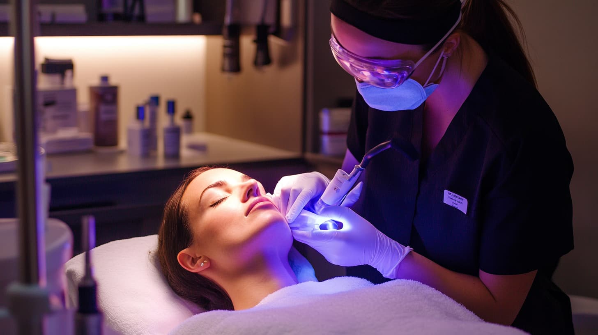
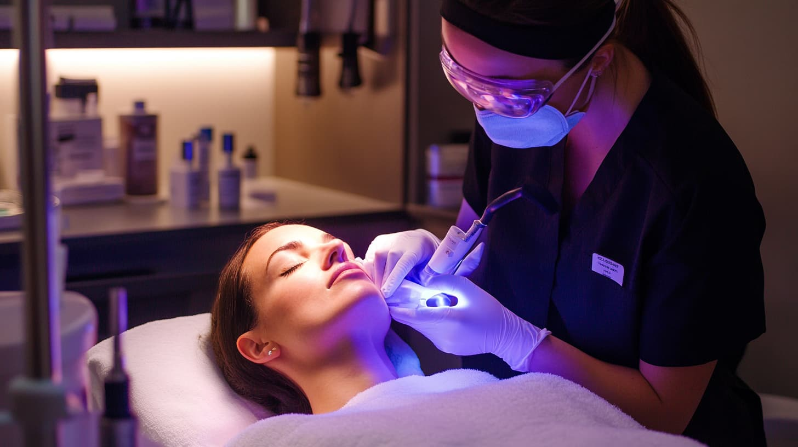

Aftercare Essentials: How to Maintain Your Skin Post-Clinic Treatment
Undergoing a professional skincare treatment at a clinic is an excellent step towards achieving your skin goals, whether it's reducing wrinkles, treating acne scars, or evening out your skin tone. However, the success of your treatment doesn't end when you leave the clinic. Proper aftercare is crucial to maintaining the results and ensuring that your skin heals and recovers optimally. In this article, we'll explore the essential steps you need to take after your clinic treatment to care for your skin, prevent complications, and prolong the benefits of your treatment.
1. Follow Your Skincare Professional's Instructions
The first and most important step in aftercare is to closely follow the instructions provided by your skincare professional. Every treatment has its own specific aftercare guidelines designed to promote healing and enhance results.
We Recommend ACL Cosmetic Clinic- Best Beauty Clinic in Chatswood Sydney
Your skincare professional understands the nuances of the treatment you’ve undergone and how your skin might react. They will provide you with a tailored aftercare plan that includes recommendations on which products to use, how often to apply them, and what activities or products to avoid. Ignoring these instructions can lead to complications such as irritation, infection, or compromised results.
Common Aftercare Guidelines
While aftercare instructions will vary depending on the treatment, some common guidelines include:
Avoiding sun exposure: Your skin may be more sensitive to the sun after treatments like chemical peels, laser therapy, or microneedling. Use a broad-spectrum sunscreen with at least SPF 30, and avoid direct sunlight whenever possible.
Using gentle skincare products: Post-treatment, your skin will likely be more sensitive. Stick to mild, non-irritating cleansers, and avoid exfoliants, retinoids, or any products with active ingredients unless advised by your professional.
Staying hydrated: Drinking plenty of water helps to support your skin's healing process from the inside out.
2. Keep Your Skin Hydrated
Hydration is a key component of post-treatment care, as well-hydrated skin heals faster and looks healthier.
The Importance of Moisturizing
After a treatment, especially those that involve exfoliation or resurfacing, your skin may feel dry and tight. A good moisturizer helps to restore the skin’s barrier, lock in moisture, and reduce the risk of peeling or flaking. Choose a moisturizer that is fragrance-free and designed for sensitive skin to avoid irritation.
Using Hydrating Serums
In addition to a moisturizer, consider using a hydrating serum that contains hyaluronic acid, a powerful humectant that attracts moisture to the skin. This can help to keep your skin plump and hydrated, enhancing the healing process.
Drinking Water
Don’t forget about internal hydration. Drink plenty of water throughout the day to keep your skin hydrated from within. This supports overall skin health and can improve the outcome of your treatment.
3. Protect Your Skin from the Sun
Protecting your skin from the sun is crucial after any skincare treatment, particularly those that involve resurfacing or exfoliation.
Why Sun Protection Is Crucial
After treatments like chemical peels, laser therapy, or microdermabrasion, your skin is more vulnerable to UV damage. Sun exposure can lead to hyperpigmentation, irritation, and even scarring. To prevent these complications, it’s essential to protect your skin from the sun as it heals.
How to Protect Your Skin
Use Sunscreen: Apply a broad-spectrum sunscreen with at least SPF 30 every morning, regardless of the weather. Reapply every two hours if you’re outdoors, and immediately after swimming or sweating.
Wear Protective Clothing: In addition to sunscreen, wear protective clothing such as wide-brimmed hats and sunglasses when outdoors. This provides an extra layer of protection against UV rays.
Avoid Peak Sun Hours: Try to stay out of direct sunlight, especially during peak hours (10 AM to 4 PM), when UV rays are strongest.
4. Avoid Picking or Touching the Treated Area
It can be tempting to touch or pick at your skin after a treatment, especially if you notice peeling or crusting, but this can lead to complications.
The Risks of Picking at Your Skin
Picking or scratching the treated area can disrupt the healing process, leading to irritation, infection, or even scarring. It can also compromise the results of your treatment, making it less effective.
What to Do Instead
If your skin is peeling or if you notice scabs forming, resist the urge to pick at them. Let the skin heal naturally. If you’re experiencing discomfort, consult your skincare professional for advice on how to manage it safely.
5. Avoid Strenuous Activities and Heat
In the days following your treatment, it’s important to avoid activities that cause excessive sweating or expose your skin to heat.
Why Heat and Sweat Are Problematic
Excessive heat and sweat can irritate your skin and prolong the healing process. They can also increase the risk of infection, particularly if your skin has been broken or abraded during the treatment.
Activities to Avoid
Exercise: Avoid strenuous exercise or activities that cause you to sweat heavily for at least 24-48 hours after your treatment. This includes activities like running, hot yoga, or using a sauna.
Hot Showers or Baths: Stick to lukewarm water when showering or bathing, as hot water can irritate sensitive skin.
Direct Heat Sources: Avoid direct heat sources such as fireplaces, hot tubs, or heated blankets, which can also aggravate your skin.
6. Use Recommended Skincare Products
Your skincare professional will likely recommend specific products to use after your treatment to support healing and enhance results.
Why Professional Recommendations Matter
The products recommended by your skincare professional are chosen specifically for their ability to soothe, protect, and support your skin as it heals. These products are often formulated with ingredients that are gentle yet effective, making them ideal for post-treatment care.
Commonly Recommended Products
Gentle Cleanser: A mild, non-foaming cleanser that removes impurities without stripping the skin.
Hydrating Moisturizer: A moisturizer that helps restore the skin’s barrier and lock in moisture.
Soothing Serum: A serum with calming ingredients like aloe vera, chamomile, or hyaluronic acid to reduce redness and inflammation.
Sunscreen: A broad-spectrum sunscreen with at least SPF 30 to protect your skin from UV damage.
7. Monitor Your Skin’s Healing Progress
After your treatment, it’s important to keep an eye on your skin’s progress and report any unusual reactions to your skincare professional.
What to Look For
While some redness, swelling, or peeling is normal after many treatments, there are certain signs that could indicate a problem, such as:
Persistent redness or swelling: If these symptoms last longer than expected or worsen over time.
Unusual pain or discomfort: If you experience significant pain, itching, or discomfort that doesn’t subside.
Signs of infection: Symptoms such as pus, increased warmth, or red streaks could indicate an infection and should be addressed immediately.
When to Contact Your Skincare Professional
If you notice any of the above signs or if you have concerns about how your skin is healing, don’t hesitate to contact your skincare professional - such as visiting your local Laser Clinics in Chatswood. They can assess your symptoms and recommend any necessary adjustments to your aftercare routine.
8. Plan for Follow-Up Treatments

Depending on the type of treatment you received, you may need to schedule follow-up appointments to maintain or enhance your results.
The Importance of Follow-Up Care
Follow-up treatments allow your skincare professional to monitor your progress, assess the effectiveness of the treatment, and make any necessary adjustments to your skincare plan. These appointments are an essential part of achieving long-term success with your skincare goals.
Scheduling Your Follow-Up
Discuss the recommended timeline for follow-up treatments with your skincare professional. Whether it’s a few weeks or a few months, staying on track with these appointments will help you maintain the benefits of your treatment and continue to improve your skin’s health and appearance.
To Conclude
Proper aftercare is crucial for maintaining the results of your professional skincare treatment and ensuring that your skin heals effectively. By following your skincare professional’s instructions, keeping your skin hydrated, protecting it from the sun, and avoiding activities that could interfere with healing, you can maximize the benefits of your treatment and enjoy healthier, more radiant skin.
Remember, your skincare professional is your best resource for aftercare advice, so don’t hesitate to reach out with any questions or concerns. With the right care, your skin will continue to improve long after you leave the clinic.
Aftercare Essentials: How to Maintain Your Skin Post-Clinic Treatment
Undergoing a professional skincare treatment at a clinic is an excellent step towards achieving your skin goals, whether it's reducing wrinkles, treating acne scars, or evening out your skin tone. However, the success of your treatment doesn't end when you leave the clinic. Proper aftercare is crucial to maintaining the results and ensuring that your skin heals and recovers optimally. In this article, we'll explore the essential steps you need to take after your clinic treatment to care for your skin, prevent complications, and prolong the benefits of your treatment.
1. Follow Your Skincare Professional's Instructions
The first and most important step in aftercare is to closely follow the instructions provided by your skincare professional. Every treatment has its own specific aftercare guidelines designed to promote healing and enhance results.
We Recommend ACL Cosmetic Clinic- Best Beauty Clinic in Chatswood Sydney
Why Following Instructions Matters
Your skincare professional understands the nuances of the treatment you’ve undergone and how your skin might react. They will provide you with a tailored aftercare plan that includes recommendations on which products to use, how often to apply them, and what activities or products to avoid. Ignoring these instructions can lead to complications such as irritation, infection, or compromised results.
Common Aftercare Guidelines
While aftercare instructions will vary depending on the treatment, some common guidelines include:
2. Keep Your Skin Hydrated
Hydration is a key component of post-treatment care, as well-hydrated skin heals faster and looks healthier.
The Importance of Moisturizing
After a treatment, especially those that involve exfoliation or resurfacing, your skin may feel dry and tight. A good moisturizer helps to restore the skin’s barrier, lock in moisture, and reduce the risk of peeling or flaking. Choose a moisturizer that is fragrance-free and designed for sensitive skin to avoid irritation.
Using Hydrating Serums
In addition to a moisturizer, consider using a hydrating serum that contains hyaluronic acid, a powerful humectant that attracts moisture to the skin. This can help to keep your skin plump and hydrated, enhancing the healing process.
Drinking Water
Don’t forget about internal hydration. Drink plenty of water throughout the day to keep your skin hydrated from within. This supports overall skin health and can improve the outcome of your treatment.
3. Protect Your Skin from the Sun
Protecting your skin from the sun is crucial after any skincare treatment, particularly those that involve resurfacing or exfoliation.
Why Sun Protection Is Crucial
After treatments like chemical peels, laser therapy, or microdermabrasion, your skin is more vulnerable to UV damage. Sun exposure can lead to hyperpigmentation, irritation, and even scarring. To prevent these complications, it’s essential to protect your skin from the sun as it heals.
How to Protect Your Skin
4. Avoid Picking or Touching the Treated Area
It can be tempting to touch or pick at your skin after a treatment, especially if you notice peeling or crusting, but this can lead to complications.
The Risks of Picking at Your Skin
Picking or scratching the treated area can disrupt the healing process, leading to irritation, infection, or even scarring. It can also compromise the results of your treatment, making it less effective.
What to Do Instead
If your skin is peeling or if you notice scabs forming, resist the urge to pick at them. Let the skin heal naturally. If you’re experiencing discomfort, consult your skincare professional for advice on how to manage it safely.
5. Avoid Strenuous Activities and Heat
In the days following your treatment, it’s important to avoid activities that cause excessive sweating or expose your skin to heat.
Why Heat and Sweat Are Problematic
Excessive heat and sweat can irritate your skin and prolong the healing process. They can also increase the risk of infection, particularly if your skin has been broken or abraded during the treatment.
Activities to Avoid
6. Use Recommended Skincare Products
Your skincare professional will likely recommend specific products to use after your treatment to support healing and enhance results.
Why Professional Recommendations Matter
The products recommended by your skincare professional are chosen specifically for their ability to soothe, protect, and support your skin as it heals. These products are often formulated with ingredients that are gentle yet effective, making them ideal for post-treatment care.
Commonly Recommended Products
7. Monitor Your Skin’s Healing Progress
After your treatment, it’s important to keep an eye on your skin’s progress and report any unusual reactions to your skincare professional.
What to Look For
While some redness, swelling, or peeling is normal after many treatments, there are certain signs that could indicate a problem, such as:
When to Contact Your Skincare Professional
If you notice any of the above signs or if you have concerns about how your skin is healing, don’t hesitate to contact your skincare professional - such as visiting your local Laser Clinics in Chatswood. They can assess your symptoms and recommend any necessary adjustments to your aftercare routine.
8. Plan for Follow-Up Treatments
Depending on the type of treatment you received, you may need to schedule follow-up appointments to maintain or enhance your results.
The Importance of Follow-Up Care
Follow-up treatments allow your skincare professional to monitor your progress, assess the effectiveness of the treatment, and make any necessary adjustments to your skincare plan. These appointments are an essential part of achieving long-term success with your skincare goals.
Scheduling Your Follow-Up
Discuss the recommended timeline for follow-up treatments with your skincare professional. Whether it’s a few weeks or a few months, staying on track with these appointments will help you maintain the benefits of your treatment and continue to improve your skin’s health and appearance.
To Conclude
Proper aftercare is crucial for maintaining the results of your professional skincare treatment and ensuring that your skin heals effectively. By following your skincare professional’s instructions, keeping your skin hydrated, protecting it from the sun, and avoiding activities that could interfere with healing, you can maximize the benefits of your treatment and enjoy healthier, more radiant skin.
Remember, your skincare professional is your best resource for aftercare advice, so don’t hesitate to reach out with any questions or concerns. With the right care, your skin will continue to improve long after you leave the clinic.